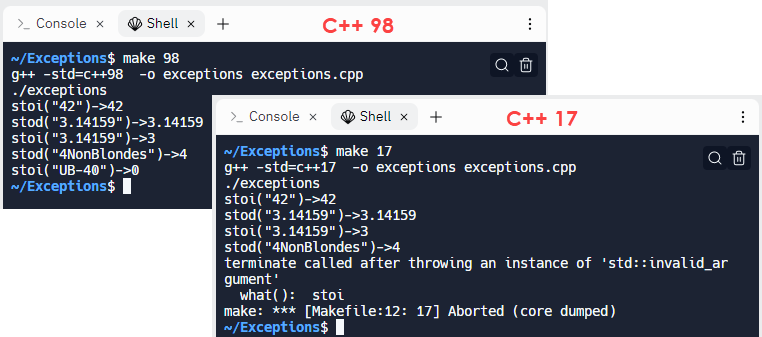

Handling Errors
We finished the last lesson with a question: what should the stoi() and stod() functions do when given invalid input? The C++ 17 version, from the standard library, does one thing, while the version we wrote does something else entirely when given the invalid input "UB-40".

To answer this question, first consider what should happen when you try to:
- Print the square root of -2?
- Open a file that doesn't exist? Read data from that file?
- Convert a string that doesn't contain a number to a number?
Each of these is handled in a different way. None of them are syntax or linker errors. Instead, they are runtime errors. The compiler and linker produced an executable, but when it runs, an error occurs.
Let's examine a few ways to handle such errors.
 This course content is offered under a
CC
Attribution Non-Commercial license. Content in this course
can be considered under this license unless otherwise noted.
This course content is offered under a
CC
Attribution Non-Commercial license. Content in this course
can be considered under this license unless otherwise noted.